Next: GA Up: Optimization Algorithms Previous: ADPSO Contents
| 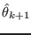 | 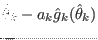 | ||
| 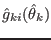 | 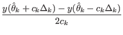 |
With
the solution estimation at iteration 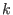, 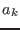 a learning
rate,
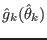 the estimation of the gradient at
,  the objective function, 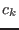 a perturbation rate and
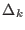 the randomized perturbation vector.
the objective function, 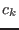 a perturbation rate and
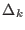 the randomized perturbation vector.
The current implementation performs this two-sided perturbation to estimate the gradient with the perturbation vector drawn from a Bernoulli distribution to satisfy convergence conditions.
Table 3.6 lists the settings available for this optimizer.
| Name | Description |
|---|---|
| learning-rate | The learning rate used to update the new solution according to the current gradient estimation. You can use a mathematical expression for this setting and use the variable to indicate the current iteration number |
| perturbation-rate | The rate with which to perturbate the solution to estimate the gradient. You can use a mathematical expression for this setting and use the variable to indicate the current iteration number |
| epsilon | The normalized maximum parameter step size. You can use a mathematical expression for this setting and use the variable to indicate the current iteration number |
| boundary-condition | Indicates how parameter boundaries should be handled. There are three possible settings: None (does not contrain the parameter space), StickResult (only constrains the actual solution to be within the parameter boundaries) and StickAll (constrains both the actual position and the perturbed solutions to be within the parameter boundaries). |
Jesse van den Kieboom 2014-02-26